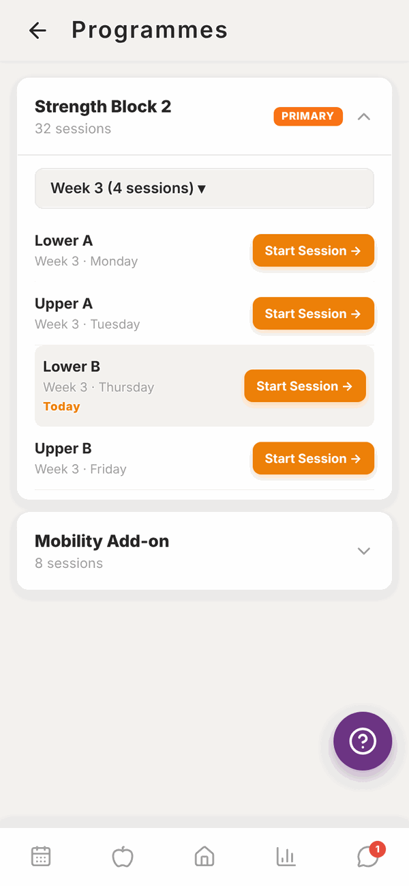
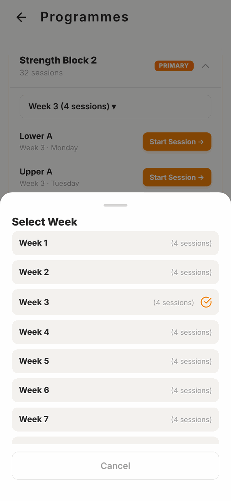
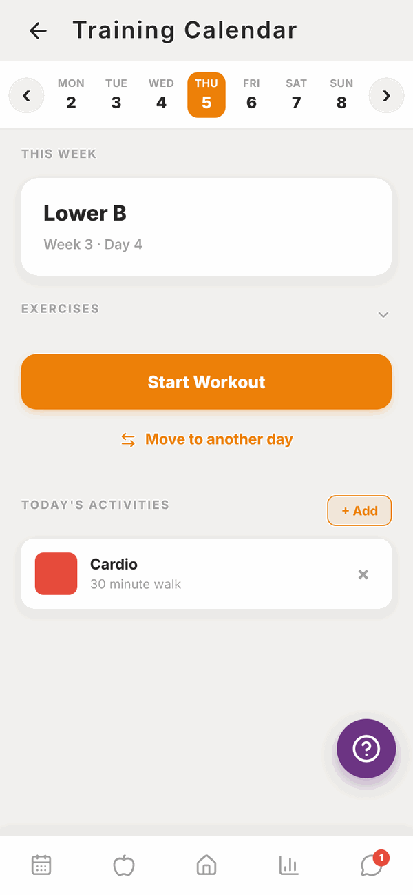
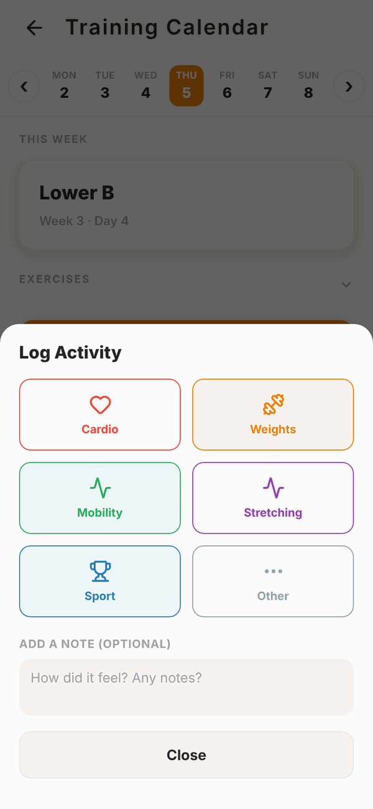

Totality for clients
Your programme and calendar
See the programme your trainer wrote, pick a week, check your training calendar, move a workout and log other activities.
Your trainer writes your programme and assigns it to you in Totality. You can see it two ways: as a list of weeks in Programmes, or day by day in the Calendar. Both open the same workouts.
Programmes#
On Home, scroll to MORE and tap Programmes.

Each programme shows its name and how many sessions it has. The one marked PRIMARY is your main programme, the one Home uses for today's workout.
- Tap a programme's name to open or close it.
- Tap the week button (for example Week 3 (4 sessions) ▾) to choose a different week.
- Each session shows its name and day. Today's session is highlighted and marked Today.
- Tap Start Session → to start any session.

Totality works out which week you're in from the date your trainer assigned the programme. Week 1 starts that day.
If you see No programme assigned yet, your trainer hasn't given you one. Message them.
Training Calendar#
On Home, scroll to MORE and tap Calendar. It shows one week at a time.

- Tap a day along the top to see that day's workout.
- Use the arrows at either side to move to last week or next week.
- Tap EXERCISES to see the exercises in that workout.
- Tap Start Workout to begin. If you already did it that day, the button says Done. View summary.
A day with nothing planned shows Rest Day.
Move a workout to another day#
Can't train today? You can swap a workout with another day in the same week.
- In the Calendar, tap the day with the workout you want to move.
- Tap Move to another day.
- Tap the day you want it on. The list shows what's on each day now.
The two days swap. Whatever was on the day you picked (a workout or a rest day) moves to the day you left.
This only changes that one week. Your trainer's programme stays the same, and the next week goes back to normal.
Log other activities#
Did a run, a game of netball, or a stretch at home? Log it so your trainer sees it.
- In the Calendar, find TODAY'S ACTIVITIES and tap + Add.
- Type a note if you like, for example "30 minute walk". This is optional.
- Tap the type: Cardio, Weights, Mobility, Stretching, Sport or Other. Tapping the type saves it.

To remove an activity, tap the x on it.
Questions#
Why is the wrong week showing?
Totality counts weeks from the day your trainer assigned the programme. If it's out of step with what you've done, message your trainer. They can reassign it.
Can I do a session from a different week or day?
Yes. Open Programmes, pick the week, and tap Start Session → on any session.
I have two programmes. Which one shows on Home?
The one marked PRIMARY. Your trainer chooses which is primary.
Can I change the exercises in my programme?
Not the programme itself, your trainer controls that. During a workout you can swap an exercise for that one session. See Doing a workout.
I moved a workout by mistake.
Open the Calendar, tap the day it's on now, tap Move to another day and move it back.
My programme finished. What now?
When the last week is done, Home keeps showing the final week. Message your trainer for your next programme.